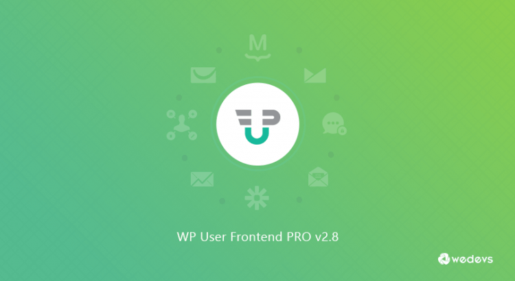

Wedevs: An Unbelievable Customer Service Story – Read This Article and Stay Away
It is very seldom we write an article about a poor customer service experience, but sometimes it’s so horrible that you hope your article will help future buyers to beware, but more importantly that the company will change how they address problems.We want other ethical companies to succeed!
DAY 1: Six months ago, we went to a company called Wedevs and bought a license for their WP Services Front End (WP meaning WordPress).The software worked fine and we wanted our second website to also be integrated with their services so our clients would only need to sign up once.We wanted to order an upgrade, but it is hard to navigate the Wedevs website, so we emailed them and asked for their help with the upgrade and we specifically asked for a link to where the upgrade information could be found.
DAY 2: They took a day to respond and claimed we just had to order a new expanded product license and Wedevs would refund the difference.
Then we tried to order it.Our order was refused.We tried another credit card, and it also was refused.So we emailed them again and asked, 'why can’t we upgrade the product?'
DAY 4: Wedevs took another day and emailed back that, 'You can’t order new if the shopping cart has old orders in it.So clean out your shopping cart.'
It was a busy day so another employee was designated to clean out the shopping cart and place the order.The employee ordered the wrong product, but of course this order went through!We emailed them our dilemma.We were ignored.
DAY 6: Two days went by and they never replied to our email, so we tried to upgrade again.It failed.We tried another credit card.It failed.We tried again on a third credit card and it failed.We called the bank to see if our credit cards were bad, and they said, 'Because the Wedevs company gateway refused you, and because the bank saw you try a couple times– and each time the company failed you– the banks put a stop on your cards.'The banker claimed they had never seen a software company refuse a good bank order.
Wedevs blocked our order, but worse they caused our bank to put stops on our accounts.This caused about four hours of work to get through to each bank and correct the problem.We not only could not buy their software, we were trying to do business with a company that only occasionally responds to emails.As a very busy employer, we can ill afford to lose half a day dealing with the problems Wedevs created for us.
After we emailed them again and described the problem they had created with out bank cards, we heard nothing in reply.We tried on Paypal and that transaction was held in 'Pending.'One of the bankers told us that Pending means the transaction won’t go through, so we canceled and tried again.The transaction was held in Pending.By the end of the day, we emailed Wedevs and told them our order was Pending and we would still like to buy their product.We heard nothing.
DAY 8: We went to Wedevs online support and filled out a complaint ticket.Why are we still trying?Because we are already using this product and just want to be able to use it seamlessly on another site.The cost in money and hours to move completely away from Wedevs is the only reason we’re trying so hard to get them to take out money!Again, no response from them.We sat in Pending status for 2 days and nothing was done.
So while at home, the idea occurred that the problem might be our work computers.However, we got the same error from home that they would not accept the order.That morning we emailed them a screenshot of the error message and that’s when they did respond that their payment gateway had us identified as a high risk buyer.'High risk for what?'we asked.We want to buy their product and our banks all say we are not high risk.They emailed back and said they have to solve the gateway problem first.
Then we got a nasty email saying we should only send in one complaint ticket at at time; that when we sent multiple tickets, it made things difficult for them.
Day 9: Their final email back to us instructed us to talk to the gateway company.Wedevs told us that if we could get the gateway company to approve us, then Wedevs would let us buy the license upgrade.What a crock of sh*t!However, going to the gateway company would still be easier than pulling out their software on 3,000 pages.This company writes software for WordPress Woo Merchant, so they specialize in online transactions.Yet they claim they can’t solve this easy transaction problem.
We emailed the gateway company explaining our case.They emailed back saying it was a Friday and they would not be able to examine the problem for a couple of business days.
Remember, our transaction has been sitting in their Pending status for three days, and this was Day 9 since I contacted them asking for help to upgrade our service.Now we have to solve the third party gateway problem for Wedevs (a third party connected to them, not us), before they would complete our order.All this because they say we are 'high risk' which is something no bank would agree with.
Then we asked to speak to the Wedevs Company president.They ignored us again.
Day 10: The next morning we emailed them that we would be publishing this article on their customer service and offered them an opportunity to provide a statement outlining their point of view.The next day our license was quickly completed and they provided us with a statement that the problem was the gateway company’s fault, not theirs.
They could have immediately solved the issue, but they choose not to.Only when they feared they would be in the news very negatively did they make any effort.Thus, after waiting 10 days to upgrade our license, we finally received their special services.
Day 14: It has been 14 days and we still have not received the balance of our prorated upgrade– and yet Wedevs still seems to believe they provide very good service.We wrote this article.
Day 15: No updates from them and we published this article.
This is our story.We cannot recommend Wedevs.Once you integrate an ecommerce plugin, it can be very costly and time consuming to end that business relationship and move on.We recommend that you avoid using Wedevs products because you can’t count on their customer service.You don’t need the headaches.To this day Wedevs seems clueless about the low level of their services.
[bsa_pro_ad_space id=4]
Share on Facebook Tweet Follow us
Posted On: 2019-09-04T00:00:00
Posted By: Jay Black



Content Date: 2019-09-04
Download Date: 2021-07-09
Document ID: L0C04E16V